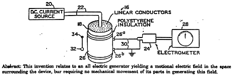
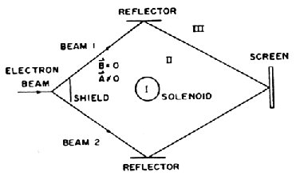
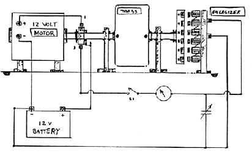
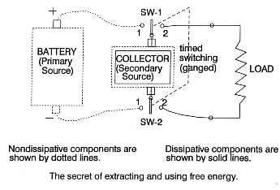
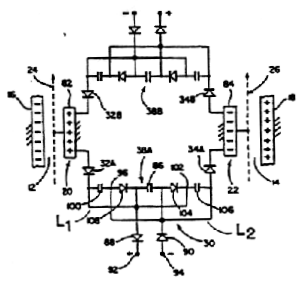
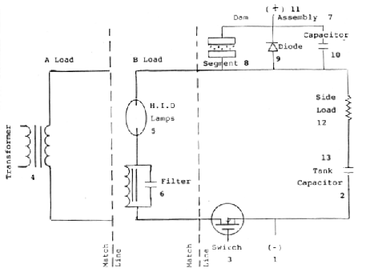
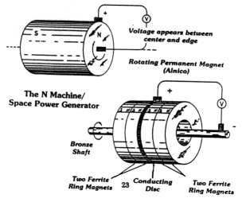
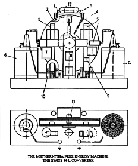
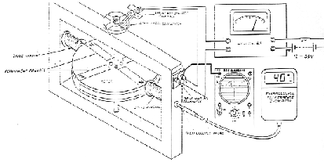

Alternativ teknik
av Ingvar Karlsson,
Del 3
Till översikt / Föregående avsnitt
Generering av vakuumfluktuationer
Hur kan man då praktiskt generera dessa fluktuationer i NPS? Med stor sannolikhet genererar naturen själv fluktuationer av olika anledningar, men att artificiellt skapa dem är svårare. En möjlig lösning är den s.k. Hooperspolen som uppfanns av den amerikanska forskaren William Hooper. Den bestar av en ledare som är vikt fram och tillbaka. Se figur 8. Inget magnetfält kan mätas runt en sådan spole eftersom strömmen i ledaren går fram och tillbaka vilket bidrar till att de uppkomna magnetfälten tar ut varandra.
Vissa forskare menar att en Hooperspole skulle kunna fungera som en generator av vakuumfluktuationer. Det bör tilläggas att Hooperspolen har en del andra mycket intressanta elektromagnetiska egenskaper som inte kan förklaras med dagens EM-teori. Detta har verifierats av flera forskare. En annan känd spoltyp är caduceus- och bifilarspolen som bygger på samma princip som Hooperspolen. Just dessa spolar verkar användas i ett flertal frienergimaskiner som en nödvändig komponent för funktionen. Det har även rapporterats att biologiska processer påverkas på ett anomalt satt av dessa spolar.
Detektering av vakuumfluktuationer
Det finns ett flertal möjliga detektorer som kan mäta vakuumfluktuationer och den kanske mest intressanta är Aharonov-Bohm-detektorn. Se figur 9. Den bygger på elektronstråleinterferens och är verifierad av många forskare runt om i världen. Principen är att en speciell spole genererar en magnetisk vektorpotential (vilket är en matematisk hjälpstorhet vid beräkningar av EM-fält) men inget magnetfält. Dagens EM-teori ger att det endast är fält som kan påverka laddade partiklar och att potentialer är endast matematiska hjälpmedel.
Aharonov-Bohm-detektorn bevisar motsatsen, att även potentialer (magnetiska) kan påverka laddade partiklar (elektroner).
Andra detektorer kan, enligt forskarna, också vara intressanta som till exempel:
- geigerräknare
- piezokristaller
- corona-ljusbågar
- Bedinidetektorn
- Hodowanekdetektorn
Ett axplock av frienergisystem
Ett föredrag om alternativ teknik är inte namnet värt om inte några frienergisystem nämns. Jag vill poängtera att inga bevis framläggs utan endast information som baserar sig på muntliga och skriftliga rapporter från oberoende forskare.Bedinigeneratorn
Se figur 10. Denna generator bygger på Beardens skalarteori och fungerar som det klassiska konceptet: en motor driver en generator som laddar ett batteri som driver motorn och så vidare.Bearden menar att Bedinigeneratorn fungerar i tre steg; kalla, last och kollektor där den sistnämnda måste ha mycket speciella egenskaper för att systemet ska fungera. Se figur 11.
Fysiskt kan kollektorn bestå av olika komponenter. Bedinigeneratorn har likheter med den tidigare nämnda AllanLadd då båda laddar ett batteri med pulserande likspänning.
Det sägs att flera forskare i USA har replikerat Bedinigeneratorn och funnit att den snurrar mycket längre på ett laddat batteri än om samma maskin skulle drivas direkt från batteriet utan generatorn.

Vakuum Triode Amplifier
VTA bygger på bifilarlindade spolar ovanpå BaFe-magneter. Överskottsenergi på 500W har rapporteras. Det har tidigare varit svart att få några specifikationer på VTA:n men under det senaste året har mer information delgivits.
Hydegeneratorn
Hydegeneratorn är en roterande generator som omvandlar likspänning till växelspänning och tillbaka till likspänning med en verkningsgrad nära 100%. Se figur 12.
WlN-processen
WIN-processen är ett system som består av en resonanskrets som pulsas med likspänning. I serie med resonanskretsen finns en keramisk komponent som omvandlar nollpunktsenergin till elektrisk energi. Verkningsgrader upp till 700 % har rapporterats. Se figur 13.
N-maskinen
N-maskinen är en mycket känd maskin vars funktion har verifierats av många forskare och som bygger på en roterande magnet. Indiska energidepartementet och japanska forskningslaboratorier tillsätter stora resurser för grundforskning på denna typ av motor. En spänning uppstår mellan ytterdelen på den roterande magneten och axeln. Vid belastning av N-maskinen bildas ett motriktat vridmoment som man tror kan minskas om arbetspunkten väljs lämpligt. Detta skulle då ge verkningsgrader upp till 100%. Se figur 14.
ML-konvertern
Ett religiöst samfund i Schweiz har tillverkat en motor som producerar 3 kW utan tillsynes yttre energitillförsel. Den går under smeknamnet ML-maskinen och är uppbyggd av två motroterande plastdiskar som genererar en hög spänning. Spänningen transformeras sedan ned till 200 V DC. Lampor och motorer kan direkt drivas av ML-konvertern. ML-konvertern anses idag vara "king of converters". Se figur 15.
Adamsmotorn
Adamsmotorn är en elektrisk motor som utnyttjar mot-EMK:n i drivspolar för att ge en hög verkningsgrad. Adamsmotorn är speciellt intressant då det idag finns ritningar och mätresultat tillgängliga. Se figur 16.
Avslutning
Min personliga uppfattning är att minst 90-95% av vad som sägs och skrivs inom området alternativ teknik inte är sanningsenligt och att många endast är ute efter att tjäna pengar på desinformation. Man ska alltså vara mycket kritisk. Enda sättet att verifiera en konstruktion/ett fenomen är att bygga och experimentera själv.Varför håller jag då ett föredrag om alternativ teknik, som i många fall strider mot gängse teorier, om jag är så kritisk? Idag finns det reproducerbara experiment som påvisar ett anomalt uppträdande och som har granskats av renommerade forskare. De erkänner att fenomen existerar men kan inte ge någon förklaring. Kontentan är att det finns nya teorier att upptäcka för den intresserade och att dessa teorier kanske en dag kan utnyttjas till att hjälpa oss alla i framtiden.